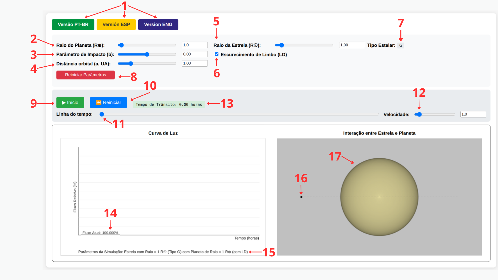
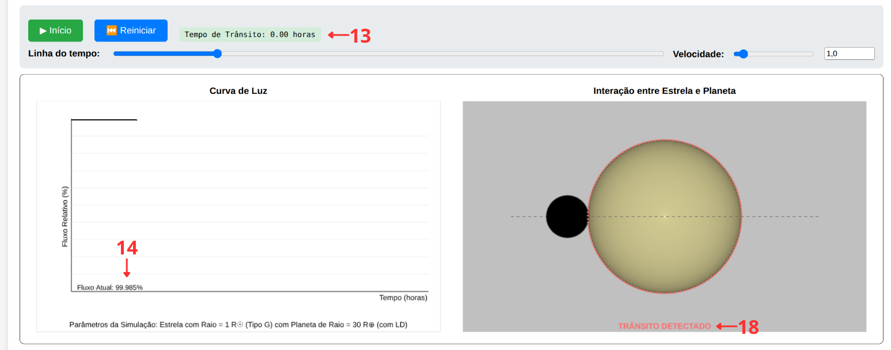
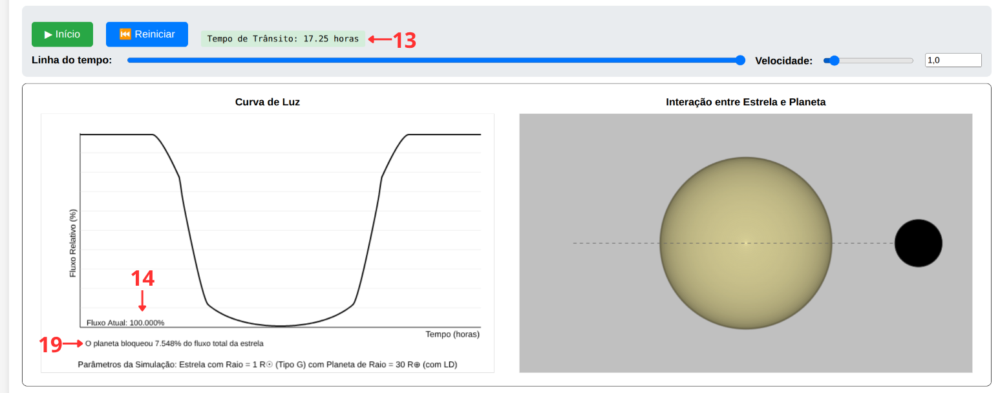

Este guia explica o funcionamento de cada controle do simulador, a física por trás dos cálculos realizados em tempo real, e sugere atividades para uso em sala de aula. Para acessar a ferramenta, volte ao simulador.
O trânsito planetário é o método mais produtivo na detecção de exoplanetas, respondendo por aproximadamente 75% das descobertas confirmadas. Ele se baseia na observação da diminuição periódica do brilho de uma estrela causada pela passagem de um planeta em frente ao seu disco.
A interpretação precisa dessa curva de luz exige considerar o escurecimento de limbo (limb darkening): as bordas do disco estelar emitem menos luz do que o centro, devido à estrutura térmica da fotosfera. Esse efeito arredonda as fases de ingresso e egresso do trânsito e é essencial para a determinação correta do raio planetário — longe de ser um mero ruído a ser descartado.
Este simulador permite manipular, em tempo real, os parâmetros físicos e orbitais de um sistema exoplanetário e observar imediatamente seus efeitos sobre a curva de luz, sincronizando a representação geométrica do trânsito com o gráfico de fluxo gerado.
A interface é dividida em um painel de parâmetros físicos e uma região dupla de visualização, com cada elemento numerado na figura abaixo. As tabelas seguintes descrevem cada um desses números em detalhe.

| Controle | Descrição |
|---|---|
| Raio do Planeta (R⊕) (2) | Define o raio do planeta em unidades de raios terrestres, de 0,2 a 30 R⊕. Quanto maior o planeta em relação à estrela, mais profundo é o trânsito. |
| Raio da Estrela (R☉) (5) | Define o raio da estrela hospedeira em unidades de raios solares, de 0,2 a 10 R☉. Ao ser alterado, atualiza automaticamente o Tipo Estelar (7) exibido, seguindo a Classificação Espectral de Harvard (O, B, A, F, G, K, M), além da massa estimada e dos coeficientes de escurecimento de limbo. |
| Parâmetro de Impacto (b) (3) | Controla a distância projetada entre o centro do planeta e o centro da estrela durante o trânsito, variando de −0,99 a 0,99. Valores próximos de zero representam trânsitos centrais; valores próximos de ±1 representam trânsitos rasantes, próximos da borda do disco estelar. |
| Distância orbital (a, UA) (4) | Define o semieixo orbital do planeta em unidades astronômicas. Esse valor, junto à massa estelar estimada, determina o período orbital pela Terceira Lei de Kepler e, consequentemente, a duração do trânsito. |
| Escurecimento de Limbo (LD) (6) | Ativa ou desativa o efeito de escurecimento de limbo no cálculo da curva de luz e na renderização visual da estrela. Compare as duas condições para visualizar como o efeito arredonda as fases de ingresso e egresso. |
| Reiniciar Parâmetros (8) | Restaura todos os controles para os valores de referência de um sistema Terra–Sol (R⊕ = 1, R☉ = 1, b = 0, a = 1 UA). |
No topo da interface, os botões (1) permitem alternar instantaneamente o idioma do simulador entre Português, Espanhol e Inglês.
| Controle | Descrição |
|---|---|
| Início / Parar (9) | Inicia ou pausa a animação do trânsito em tempo real. |
| Reiniciar (10) | Reinicia a animação a partir do primeiro quadro, sem alterar os parâmetros físicos. |
| Tempo de Trânsito (13) | Exibe o tempo decorrido do início do trânsito (primeiro contato) até o instante atual, calculado a partir da duração total T₁₄ derivada da física orbital do sistema. |
| Linha do tempo (11) | Permite arrastar manualmente a posição da animação (scrubbing), parando em qualquer instante — por exemplo, exatamente no momento do primeiro contato — independentemente do estado de reprodução. |
| Velocidade (12) | Controla a velocidade de reprodução da animação. Para a esquerda, mais rápida; para a direita, mais lenta. |
O painel esquerdo desenha a curva de luz em tempo real, exibindo o fluxo relativo (%) em função do tempo (horas), o fluxo atual instantâneo (14), e — ao final da animação — um resumo dos parâmetros da simulação (15). O painel direito mostra a interação entre estrela e planeta, com o planeta (16) orbitando a estrela hospedeira (17) ao longo de uma trajetória representada por uma linha pontilhada.
Assim que o planeta toca a borda do disco estelar, o simulador exibe um alerta visual de "TRÂNSITO DETECTADO" (18), sinalizando o início da queda de fluxo:

Ao final da animação, com o planeta egresso, o painel da curva de luz exibe um relatório com o percentual exato de fluxo bloqueado pelo trânsito (19):

O núcleo do simulador calcula a fração de fluxo estelar bloqueado pelo planeta a cada instante,
a partir da distância projetada z entre os centros dos dois discos (normalizada pelo raio
estelar) e da razão dos raios p = Rp/R★. O algoritmo distingue três
regimes geométricos:
Quando o LD está ativado, a profundidade geométrica do trânsito é ponderada pela intensidade local da superfície estelar, descrita pela lei quadrática de Claret (2000):
em que μ é a coordenada radial normalizada na superfície estelar, e u₁,
u₂ são coeficientes que dependem do tipo espectral da estrela. Estrelas mais frias (tipos
K e M) apresentam coeficientes maiores, indicando escurecimento de limbo mais pronunciado, do que
estrelas quentes (tipos O e B).
A escala temporal da animação não é arbitrária: o simulador deriva o período orbital P a
partir da Terceira Lei de Kepler,
em que a massa estelar M★ é estimada a partir do valor médio da faixa de massa associada à
classe espectral identificada pelo raio informado. A partir de P e da inclinação orbital
derivada do parâmetro de impacto, calcula-se a duração total do trânsito (T₁₄), exibida dinamicamente
durante a animação.
Configure um sistema com R☉ = 1, R⊕ = 5 e b = 0. Execute a animação com o LD ativado e depois desativado. Peça aos estudantes que descrevam a diferença na forma da curva de luz, especialmente nas fases de ingresso e egresso.
Mantendo o raio do planeta fixo, altere o raio estelar para obter uma estrela do tipo G (≈1 R☉) e, depois, uma estrela do tipo M (≈0,3 R☉). Compare a profundidade do trânsito e a curvatura da base da curva de luz nos dois casos.
Com os mesmos parâmetros de raio, varie o parâmetro de impacto de 0 a próximo de 1. Observe como a forma da curva de luz muda de um perfil simétrico e profundo para um perfil assimétrico e raso, até deixar de detectar o trânsito.
Mantendo os demais parâmetros fixos, compare a duração do trânsito (T₁₄) para a = 0,1 UA e a = 1,0 UA. Relacione a diferença observada à Terceira Lei de Kepler.
Esta é uma ferramenta de caráter exploratório e conceitual, não voltada à análise observacional quantitativa. A versão atual não incorpora:
A fundamentação física completa, o algoritmo de ocultação e a discussão didática deste simulador estão descritos no artigo publicado na Revista Brasileira de Ensino de Física. O código-fonte está disponível no repositório do GitHub.